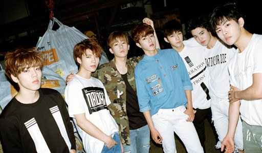

|
|
|  |
 |
그룹 인피니트
김성규, 장동우, 남우현, 호야, 이성열, 엘, 이성종
- 데뷔 : 2010년 6월 9일
- 소속사 : 울림엔테테인먼트
인피니트는 2011년에 발표한 정규앨범 'OVER THE TOP'의 타이틀곡 '내꺼하자'로 알려지게 되었습니다.
그 후, 추격자, Man In Love, DESTINY, Last Romeo, Back, Bad를 발표하며 사랑을 받고 있습니다.
인피니트는 그룹 활동 외에도 많은 유닛, 솔로 활동 등으로 인지도를 높여나가고 있습니다.
유닛으로는 인피니트 H, 인피니트 F가 있고, 솔로(가수)로 활동하는 멤버로는 김성규, 남우현이 있습니다.
인피니트는 음악뿐만 아니라, 연기, 뮤지컬, 예능에서도 활동하고 있습니다.
팀 이름처럼 어떤 것에 한정되지 않고 여러 가지 모습을 보여줄 수 있다는 것, 그것이 인피니트의 장점이에요.
|
|